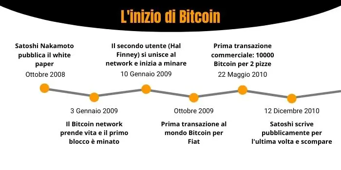

PROGETTAZIONE E REALIZZAZIONE DI UN WEBSITE SU CRIPTOVALUTE
← Origini e Sviluppo della Blockchain e delle Criptovalute →
La blockchain e i registri digitali distribuiti stanno vivendo un’evoluzione straordinaria ma le loro radici risalgono a tecnologie più antiche. Un esempio significativo è il BitTorrent, uno dei primi protocolli peer-to-peer per la condivisione di file, che può essere considerato un precursore della blockchain. Questo sistema permetteva a ogni partecipante della rete di conservare una copia del file, suddiviso in parti e distribuito tra gli utenti.

Fonte:L’inizio di Bitcoin. Fonte: CBP prep course
Gia nel 1998, Nick Szabo, un informatico e crittografo di rilievo, espose numerose idee che ebbero un ruolo significativo nella creazione delle moderne risorse digitali. propose infatti il concetto di una criptovaluta decentralizzata chiamata Bit Gold utilizzando i principi crittografici. Questa non fu mai implementata ma è considerata uno dei precursori diretti del Bitcoin e di altre criptovalute moderne.
All'inizio del 2009, il software Bitcoin fu reso disponibile al pubblico, segnando l'inizio di una nuova era tecnologica e finanziaria. Fu in quel momento che Satoshi Nakamoto estrasse i primi 50 Bitcoin, inaugurando ufficialmente la pratica del mining di criptovalute e dando avvio al funzionamento della rete decentralizzata che avrebbe rivoluzionato il concetto di valuta digitale. Al momento della sua nascita, il valore di un Bitcoin era di pochi centesimi di dollaro ma la crescente popolarità ha fatto che si che ne aumentasse vertiginosamente il valore.
“La storia più famosa di questo periodo è quella di Laszlo Hanyecz, uno sviluppatore di software che, nel 2010, acquistò due pizze al prezzo di 10.000 Bitcoin. Si tratta della prima transazione di criptovaluta generalmente riconosciuta. Al prezzo massimo raggiunto da Bitcoin, quelle due pizze sarebbero costate ben oltre 600 milioni di dollari.”
Fonte:Kriptomat. link:kriptomat.io
Nel 2011 iniziarono a emergere le prime criptovalute alternative, conosciute come altcoin, un termine che deriva dalla loro natura di alternativa al Bitcoin cioè la criptovaluta pioniera. Queste nuove valute furono sviluppate per introdurre miglioramenti rispetto al protocollo originale del Bitcoin, offrendo funzionalità aggiuntive come velocità di transazione più elevata, maggiore anonimato e altre caratteristiche innovative per soddisfare esigenze specifiche degli utenti e ampliare le applicazioni della tecnologia blockchain.
Poseguire su Evoluzione e prospettive delle criptovalute
Fonte background:Freepik. link:freepik.com